Projects

배너 성과 집계 API 성능 최적화
View on GitHub개요
에브리타임 혜택탭 연계로 배너 클릭 API 호출량이 급증하면서 Redis Write-back 전략을 도입하여 DB 부하를 10배 감소시키고 API 응답 속도를 50배 개선했습니다.
문제 상황
에브리타임 혜택탭 출시 배경:
에브리타임 앱 내 전용 '혜택탭'으로 커머스 서비스가 노출되면서 거의 모든 페이지에 프로모션 배너가 배치되었습니다. 배너 자동 스와이핑 기능으로 인해 노출 시마다 성과 집계 API가 자동 호출되어, 이 API가 전체 API 중 호출량 1위를 차지하게 되었습니다 (하루 수백만 건).
기존 시스템의 한계:
- 배너 노출/클릭 시 즉시 MySQL DB UPDATE 쿼리 실행
- DB IOPS 급증으로 인한 성능 저하
- DB CPU 사용률 지속적 증가 (피크 시간대 80% 이상)
- API 응답 속도 저하로 사용자 경험 악화
해결 과제 (Task)
- DB 부하를 10배 이상 감소시키면서 데이터 정합성 유지
- API 응답 속도를 50배 개선하여 사용자 경험 향상
- Redis 장애 시에도 데이터 유실 방지하는 Fallback 메커니즘 구축
- 추가 인프라 비용 없이 기존 Redis 클러스터 활용
시스템 아키텍처 (Action)
graph TB
A[배너 클릭] --> B[API]
B --> C[Redis Hash]
C -->|10분 배치| D[MySQL]
B -.장애 시.-> E[SQS]
E --> D
아키텍처 개선
Before:
- 클릭 → 즉시 DB UPDATE
After:
- 클릭 → Redis HINCRBY (메모리 기반 초고속 처리)
- 10분마다 배치 → DB Bulk INSERT
- Redis 장애 시 → SQS → DB (데이터 유실 방지)
기술적 검토
다양한 솔루션 비교 분석:
1. Redis Write-back ✅ 최종 채택
- 장점: 메모리 기반 초고속 처리, 기존 인프라 활용, 정확한 집계
- 단점: Redis 장애 시 데이터 유실 가능 (SQS fallback으로 해결)
2. SQS Pub-Sub ❌ 불채택
- 이유: 메시지를 SQS로 보내도 결국 DB에 즉시 적재해야 함 (DB 부하 감소 효과 미미)
- 추가 인프라 비용 대비 성능 개선 미미
3. DB Row INSERT 방식 ❌ 불채택
- 이유: 클릭마다 새로운 Row 삽입 시 테이블 크기 급증 우려 (월 수억 건)
- 집계 쿼리 복잡도 증가 및 성능 저하 예상
4. DB Bulk INSERT ❌ 불채택
- 이유: 배치 처리 중 서버 재시작 등으로 인한 데이터 정합성 이슈
- Redis 없이 메모리 버퍼 사용 시 데이터 유실 위험
Redis Write-back 선택 이유:
- 유휴 리소스 활용: 기존 Redis 클러스터의 여유 메모리/CPU 활용 (추가 비용 제로)
- 싱글스레드 정확성: Redis의 싱글스레드 특성으로 동시성 이슈 없이 정확한 집계 보장
- 초고속 응답: 메모리 기반 HINCRBY 연산으로 밀리초 단위 응답 (API 성능 50배 개선)
- 최소 개발 비용: 기존 Redis 인프라 활용으로 신규 구축 불필요, 빠른 개발 및 배포 가능
주요 기능
Redis 구조:
HSET banner:{banner_id}:stats
clicks {count}
impressions {count}
last_update {timestamp}
배치 프로세스:
- 10분마다 실행 (데이터 유실 방지 및 실시간성 보장)
- Redis → DB Bulk INSERT
- 트랜잭션 보장 (원자성 유지)
장애 대응:
- Redis 장애 시 SQS fallback
- SQS → DB 직접 적재
- 데이터 유실 방지 (이중 안전장치)
기술 스택
- Redis 6.x, MySQL, NestJS
- AWS SQS, Cron
기술적 도전과 해결
도전 1: 배치 주기 선택 (10분 결정)
- 문제: 배치 주기를 얼마로 설정할지 트레이드오프 분석 필요
- 비교 분석:
- 1분: DB 부하 여전히 높음 (시간당 60회 INSERT), 효과 미미
- 10분: DB 부하 10배 감소, 데이터 유실 리스크 허용 범위 (최대 10분 데이터)
- 30분: 데이터 유실 리스크 증가, 실시간성 저하
- 선택 근거: 성능 개선 효과와 데이터 유실 리스크의 최적 밸런스
- 보완책: SQS fallback으로 Redis 장애 시에도 데이터 유실 방지
도전 2: SQS Fallback 메커니즘
- 문제: Redis 장애 시 데이터 유실 우려
- 구체적 구현:
- Redis HINCRBY 실패 시 try-catch로 즉시 감지
- 실패 이벤트를 SQS에 발행 (
banner_id,type,count) - SQS 컨슈머가 DB에 직접 UPDATE 쿼리 실행
- 컨슈머 실패 시 DLQ(Dead Letter Queue)로 전송 → 수동 처리
- 검증: Redis 장애 시뮬레이션으로 100% 데이터 보존 확인
도전 3: 트랜잭션 보장 (원자성)
- 문제: 배치 실행 중 서버 재시작 시 데이터 정합성 이슈 가능
- 해결:
- 배치 시작: Redis 데이터를 임시 백업 키(
banner:*:stats:backup)로 복사 - DB INSERT 실패: Redis 백업에서 복구 후 재시도
- DB INSERT 성공: Redis 원본 데이터 DEL, 백업 데이터 삭제
- 트랜잭션 보장: DB INSERT와 Redis DEL을 하나의 트랜잭션으로 묶음
- 배치 시작: Redis 데이터를 임시 백업 키(
- 효과: 배치 실패 시에도 데이터 정합성 100% 유지
도전 4: Row INSERT 방식 불채택 이유 보강
- 문제: 클릭마다 새로운 Row를 INSERT하는 방식 검토
- 파티셔닝 고려:
- 날짜별 파티션 테이블로 데이터 분산 가능
- 월별 파티션 삭제로 오래된 데이터 정리 용이
- 불채택 이유:
- 실시간 집계 쿼리 성능:
SUM(clicks), GROUP BY banner_id쿼리가 UPDATE 방식보다 3배 느림 - 테이블 크기: 월 수억 건 INSERT 시 테이블 크기 급증 (예상 100GB 이상)
- 인덱스 유지 비용: 파티션별 인덱스 재구축 비용 증가
- 실시간 집계 쿼리 성능:
- 최종 선택: UPDATE 방식이 집계 쿼리 성능과 스토리지 비용 측면에서 우수
주요 성과 (Result)
- DB IOPS: 10배 감소
- DB CPU: 25% 절감
- 서버 CPU: 7% 절감
- API 응답 속도: 500ms → 10ms (50배 개선)
- 데이터 유실: 0건 (SQS Fallback으로 100% 보장)
- 추가 인프라 비용: 0원 (기존 Redis 활용)
배운 점
- Write-back 패턴 실전 적용 경험 (캐시 계층 활용)
- 다양한 솔루션 비교 분석을 통한 최적 아키텍처 도출
- 고트래픽 환경에서의 성능 최적화 및 장애 대응 설계